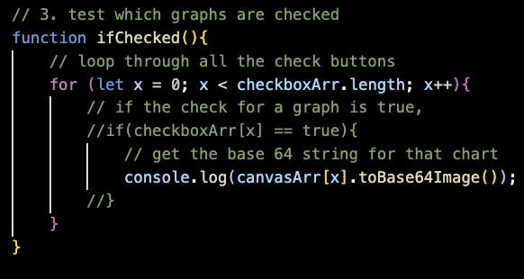
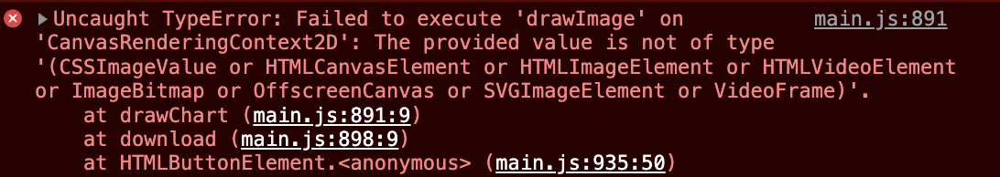
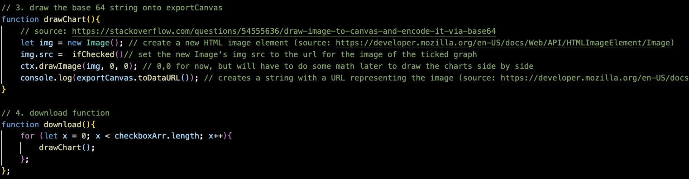
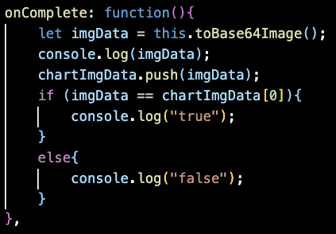
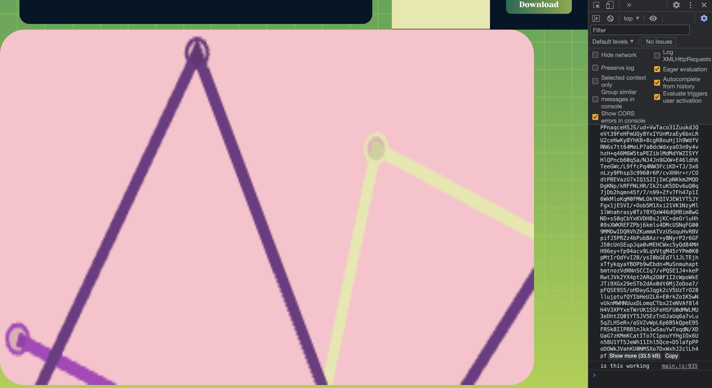
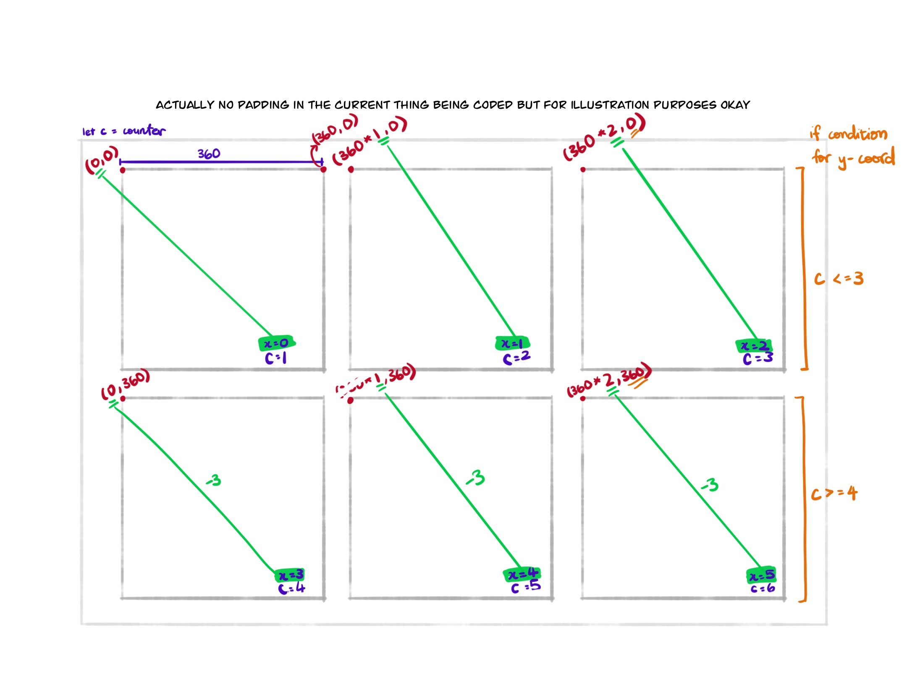
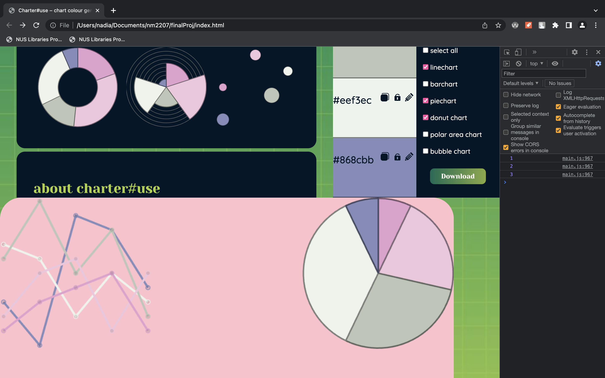
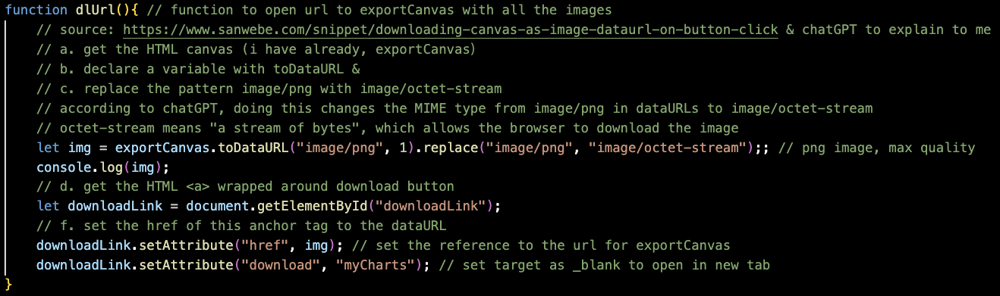

✒ Week 12
♦ Summary
This week, I worked on two things.
• using svgs for my icons instead of emojis & special entities
• working on the download function
I thought the svg bit was frustrating at first. On hindsight, the download function has to be THE most frustrating thing I've encountered in this project.
♦ svgs & raphael
I read somewhere that we can't use any other svg libraries? Anyway, what I did was illustrate my own icons in Adobe Illustrator and save them as svgs. Then, I opened the svg files in VSCode and copied the path. I followed the documentation mostly, and a lot of trial and error. It's still not complete because if you press Lock All & Unlock All, it still uses the emoji. I forgot about those, will change them next week.
♦ download button
I'm going to focus on writing about this function this week because the other stuff I did definitely did not trip me up as much as this one.
Generally, this is what I wanted download() to do:
1. Click the button
2. Create a canvas element called exportCanvas where everything that needs to be downloaded will be assembled
3. Test which charts have ticked checboxes
For ticked checkboxes...
4. Get the canvas with the corresponding chart
5. Get the base 64 string for the chart
6. Draw the chart into exportCanvas using the base 64 string
7. When all the charts are drawn into exportCanvas, download exportCanvas
♦ Getting the charts to show up on another canvas (exportCanvas)
I tried writing the loop that would test if the checkbox was checked. I tested the function by adding an EventListener to the download button to call ifChecked() when clicked. The if condition wouldn’t work. The strings were generated when the if statement was commented out though.

Then I realised it was because I should set my if condition to checkboxArr[x].checked == true instead. And it worked!
Now I had to find a way to draw this string into exportCanvas (I changed the name from exportImg so that it’s a little clearer). I decided to remove the for loop in ifChecked since I would also need the for loop to do things like drawing the chart onto exportCanvas, so it would make more sense if I had the for loop in the “command center” function download().
When I tried organising the functions together in download(), I got this error:

I thought maybe we can’t use base64 strings to draw on canvases? I then decided to change my approach for this part of the algorithm:
1. Get a reference URL to the chart
2. Set this reference URL as the img src in exportCanvas
I thought maybe we could draw with img src based on this thread. However, I got the same error upon replacing toBase64Image() with toDataURL().
I did more reading and realised I had to create a new HTML image before setting its source as the URL for the chart image. Then I could draw this image onto exportCanvas.

When I tried this, it yielded two things:
1. A blank image
2. Returned the url multiple times
I decided to get rid of ifChecked() and just move the if condition into download() too, like with the for loop. Otherwise I think it would create empty images for the other unticked graphs too.
I suddenly started getting .toDataURL is not a function errors. It didn’t matter whether I used checkboxArr[x], checkboxArr[0] or even the chartjs chart variable name directly like lnPrvw.toDataURL I don’t know why it suddenly decided to stop working, but I decided to just change canvasArr to:
const canvasArr = Array.from(document.getElementsByClassName("canvasBox"));. canvasBox was a class I had attached to all the canvases storing the chart images for styling.
It still didn't work, so I Googled more. After reading this thread, I realised that maybe I had to use toBase64Image() within the chart declaration, so that the conversion happened after the chart is loaded. Then, I could push that base 64 string into an array.
It was a very frustrating process because I couldn’t even check using Chrome if the base 64 string that is pushed into imgData will create the correct image because copy and pasting the string into the searchbar yielded a 404 error. If I copied and pasted the same string through a direct console.log rather than through an array, the image does show up. I resorted to an if statement to test if the two were equal.

They were, so at least now I’m able to get data that actually shows something other than a white rectangle.
Also, there didn’t seem to be any full working solutions to my problem that I could find on Google, so I took bits and pieces to try and understand what was going on. This is what I ended up with:

The image of the linechart was huge, so I decided to add some styling. Maybe that will make it smaller. exportCanvas width was 1080, so each chart should take up 1080 / 3 = 360 to fit 6 of them in 2 rows. I tried doing this in new Image(360, 360), but it had no effect. So I did more googling and found that we shouldn't use strings to determine px values for height & width. I also referred to W3Schools, where I learned that I might have to use setAttribute() instead of .style to set the height and width of exportCanvas. Then, I set the width and height of the drawn chart on the exportCanvas to 360px each with this line ctx.drawImage(chartImg, 0, 0, 360, 360);
It worked! Now, I have to put in the if condition and for loop. The hardest part was to set the coordinates for drawImage() such that each chart started after the next one.
Each chart width was 360 (for now, may change in future). In any case, it’s a constant. It’s a bit hard to explain the math in words so I’m going to put the sketch I did to figure it out here:

I had to make a separate counter instead of using the x value because maybe people will select different charts and the order of the charts to be downloaded won’t necessarily be the same as the array.
So, I set up a counter in download(), with counter += 1 for every chart that was ticked. At first, I placed it outside the chartImg.onload function and was very frustrated when a console.log(counter) within the chartImg.onload function showed the counter perpetually at 6. A console.log(counter) outside the chartImg.onload function would show 1, 2, 3, 4, 5, 6. I decided to just put the counter += 1 inside the chartImg.onload function and it miraculously works. I guess because if it’s outside, the counter doesn’t add 1 for each chartImg.onload but just adds 6 times because it's in the for loop.
I continued getting errors:

I figured it was because I was still using x to determine the x coordinates, which wasn’t very dynamic. So I decided to initialise the counter at -1 and use counter to replace x in ctx.drawImage(chartImg, 360 * counter, 0, 360, 360); This would sync the counter to start at 0, like x, but also allow it to adapt to the situation of which charts were ticked.
I also included this line ctx.clearRect(0, 0, exportCanvas.width, exportCanvas.height); at the start of download(). I got it from this thread and it clears the canvas each time download() is called. What this means is that users are able to change their mind about what charts they want to export without having to refresh the page and losing the colours – they just have to tick their new selection and press download.
♦ Actually downloading exportCanvas
After hours of searching and trial & error, I found this page that provides some code on how to download a canvas as an image. But, the page did not have much explanation. So I used chatGPT to teach me what it meant, especially the part with .replace(“image/png”, “image/octet-stream” .

According to chatGPT, doing this changes the MIME type from image/png in dataURLs to image/octet-stream. Octet-stream means "a stream of bytes", which allows the browser to download the image. I’m guessing that browsers can’t download dataURL data properly and this replacement converts it to data that the browser can download.
When I tested it with exportCanvas, it wouldn’t work. However, when I tested it with document.getElementById("lnPrvw");, I was actually able to download the linechart. So there must be something wrong with how I’m using exportCanvas. I had no clue what that could be, and Googling wasn’t turning up anything.
So I copy-pasted my dlUrl() code into chatGPT and asked it why my exportCanvas was downloading blank. One of the possible causes it suggested, which I also suspected was true, was that exportCanvas had not finished rendering before the dataURL is generated and stored in img. ChatGPT suggested wrapping the code in a setTimeout with a delay of 10 milliseconds. This would allow some time for the exportCanvas to finish rendering before the dataURL is generated.
I was able to download an image with the charts I ticked, but the buttons needed to be clicked twice. Apparently, it’s because the first click sets off the timer, and the second click actually downloads the image.
This irked me, so I did more searching. I found this thread, among others, that talked about how promises were a good way to get a bunch of future data together and then passed on to the next bit of code. I'm finding them pretty complex to understand and don’t think I can finish it in time for week 12 submission, so I’ll just leave it as the double click thingy first ;w;
Also, I just realised that if I randomise the data, the download function doesn't work either ;; I will have to figure out how to get that solved too. If I can't do that in time, I might just remove my randomise button because I think the download function is more important.